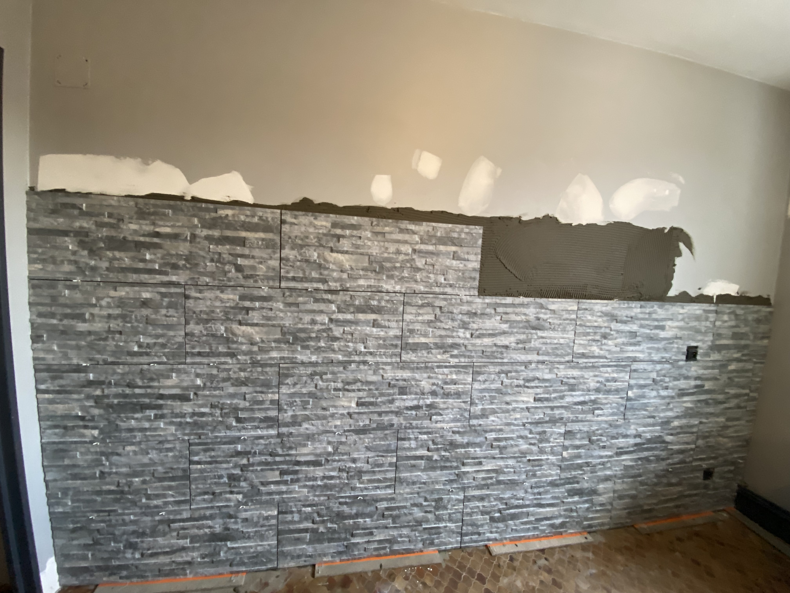
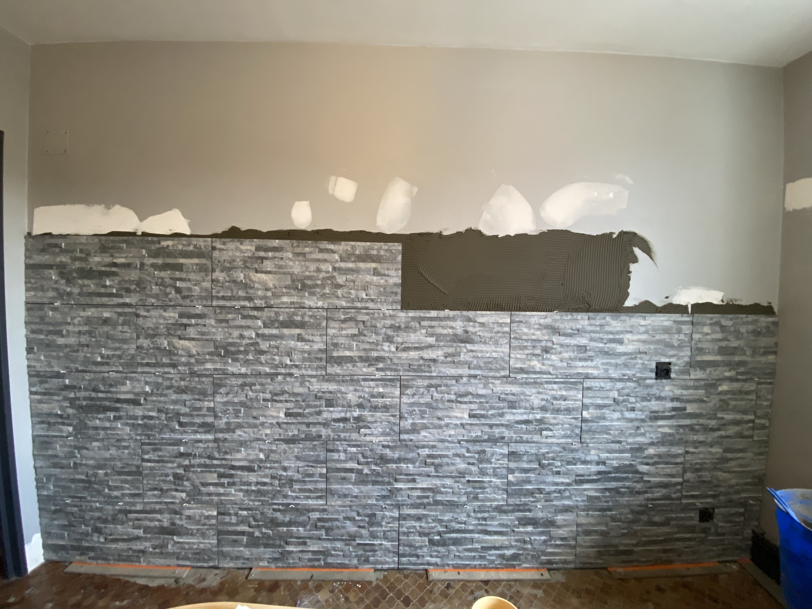
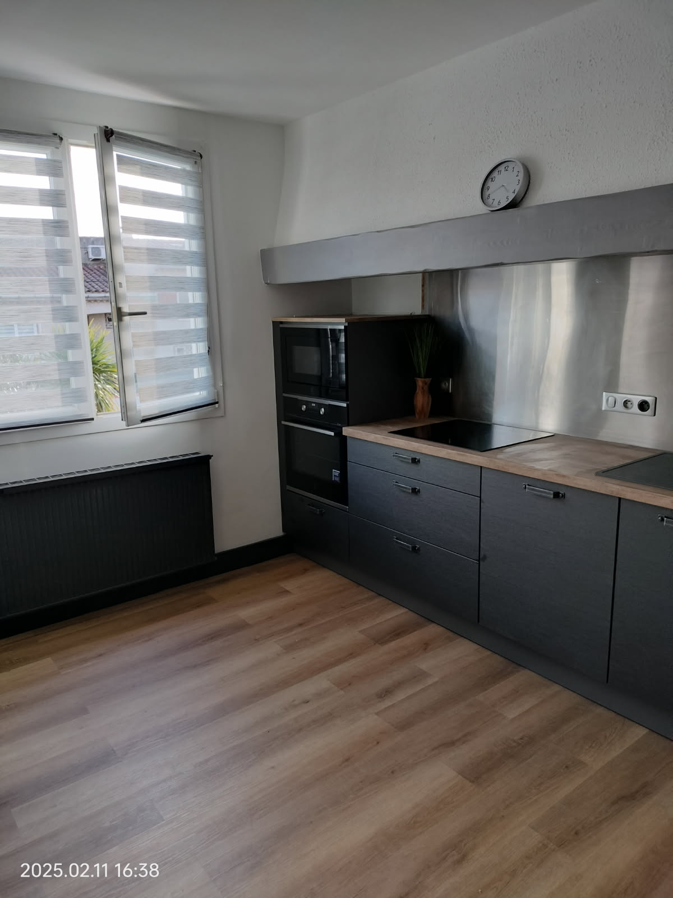

Le projet : un mur de salon transformé à Trèbes, commune de l'agglomération de Carcassonne
Trèbes, commune de l'agglomération de Carcassonne (à 5 km du centre-ville), est l'une des zones d'intervention principale de SPC RENOVATION. C'est là que nous avons réalisé ce chantier de parement pierre dans un salon de 40 m² d'une maison individuelle construite dans les années 1990.
Les propriétaires souhaitaient donner du caractère à leur séjour — trop lisse, trop uniforme — en créant un mur d'accent en parement pierre naturelle sur la façade principal du salon, derrière la cheminée. Leur inspiration : l'architecture traditionnelle des maisons de village de l'Aude et les tons chauds de la pierre de Carcassonne.
Détails du chantier
Localisation : Trèbes (11800) — commune de l'agglomération de Carcassonne — Surface traitée : 14 m² — Parement : pierre naturelle calcaire ton beige/doré — Durée : 3 jours — Budget : 2 800 € TTC
Choisir son parement pierre pour un salon à Carcassonne

La pose du parement en cours — chaque panneau positionné à la main pour un rendu naturel.
Il existe trois grandes familles de parements pour un salon à Carcassonne :
1. Pierre naturelle (notre choix pour Trèbes)
La pierre naturelle (calcaire, grès, ardoise, quartzite) offre une authenticité et une variété de teintes incomparables. Chaque plaquette est unique, ce qui donne au mur un rendu très organique — en parfaite cohérence avec l'architecture de l'Aude.
- Avantages : résistance, durabilité, rendu naturel exceptionnel
- Inconvénients : plus lourd, plus cher, nécessite un support solide
- Prix à Carcassonne : 80 à 200 €/m² selon l'essence
2. Pierre reconstituée
La pierre reconstituée est fabriquée à partir de granulats de pierre concassée et de ciment. Elle imite parfaitement la pierre naturelle à un coût plus accessible — une option intéressante pour les budgets serrés à Carcassonne.
3. Parement synthétique
Les parements en polyuréthane ou résine imitent la pierre mais sont très légers — idéal pour les murs en placoplatre des constructions récentes de Carcassonne. Résultat moins authentique mais très économique.
Préparation du mur : l'étape clé à Carcassonne
La durabilité d'un parement pierre à Carcassonne dépend en grande partie de la qualité de la préparation du support. Votre artisan plâtrier doit absolument s'assurer que :
- Le mur est propre, sain et débarrassé de toute peinture cloquante, poussière ou traces grasses
- Le support est suffisamment résistant pour supporter le poids du parement (pierre naturelle : 30 à 50 kg/m²)
- Les aspérités et irrégularités importantes sont corrigées (un parement ne masque pas un mur en mauvais état)
- Un gobetis d'accroche est appliqué sur les supports lisses (béton, polystyrène) pour améliorer l'adhérence
Pour ce chantier à Trèbes, le mur était en parpaing enduit — un support solide et correctement dimensionné pour recevoir notre parement en calcaire.
La pose du parement pierre : techniques et conseils

Le parement presque terminé — encore quelques rangs à compléter en haut.
La pose du parement pierre est un métier qui nécessite un savoir-faire spécifique. Voici comment notre artisan a procédé sur ce chantier à Trèbes, à deux pas de Carcassonne :
Étapes de pose
- Calepinage : disposition préalable des pierres à sec pour optimiser le rendu et limiter les coupes
- Traçage des guides : horizontaux et verticaux au niveau laser
- Encollage : mortier-colle adapté à la pierre naturelle, appliqué à la spatule crantée
- Pose de bas en haut : pour éviter que les pierres du dessous ne se désolidarisent sous le poids
- Variation des joints : espacement irrégulier pour un rendu naturel
- Coupes soignées à la meuleuse pour les angles et contours de cheminée
Attention sur placo
La pose de pierre naturelle lourde sur du placo standard à Carcassonne n'est pas recommandée. Le placo doit être doublé ou renforcé. Pour les poids importants, optez pour de la pierre reconstituée ou du parement synthétique — votre artisan à Carcassonne vous conseillera.
Joints et finitions : le détail qui fait tout
Les joints d'un parement pierre à Carcassonne sont ce qui transforme une pose correcte en une réalisation d'exception. Sur ce chantier à Trèbes, nous avons utilisé un joint à la teinte sable naturel, en parfaite harmonie avec la teinte dorée du calcaire.
Types de finition de joints
- Joint plat : discret, moderne, s'efface au profit de la pierre
- Joint creux / brossé : accentue le relief et le côté rustique — très apprécié dans les maisons de caractère de l'Aude
- Joint au fer : lisse et brillant, pour un effet plus contemporain
Traitement et protection
Sur ce chantier à Trèbes, nous avons appliqué un hydrofugant et anti-tache sur l'ensemble du parement calcaire. Ce traitement est fortement recommandé dans les salons de Carcassonne pour protéger la pierre contre les traces de doigts, les projections et l'humidité éventuelle.
Le résultat final : une cuisine et une pièce de vie transformées

Le résultat final — cuisine avec parement pierre ardoise, plan de travail bois et meubles anthracite.
Le résultat a dépassé toutes les attentes. Le mur en parement pierre ardoise grise, associé aux meubles anthracite et au plan de travail bois massif, crée une ambiance industrielle-chic très contemporaine. Un caractère fort, authentique, qui rappelle les pierres de la Cité de Carcassonne.
Le client a complété la transformation avec une peinture blanc mat sur les murs adjacents — un choix qui met parfaitement en valeur le parement sombre. Pour les idées couleurs, consultez notre guide sur la peinture intérieure à Carcassonne.
Bilan chantier
Avant : mur lisse en enduit, sans caractère — Après : parement pierre ardoise grise, ambiance premium, espace valorisé — Durée : 4 jours — Budget : 3 200 € TTC (matériaux + pose) — Localisation : Carcassonne, Aude (11)
Conclusion : le parement pierre, un investissement malin dans l'Aude
Un parement pierre est l'un des travaux les plus spectaculaires en rapport qualité/prix pour rénover un salon à Carcassonne et dans l'Aude. Quelques mètres carrés suffisent pour transformer radicalement l'ambiance d'une pièce et valoriser un bien immobilier.
SPC RENOVATION réalise la pose de parements pierre, brique et béton dans tout le secteur de Carcassonne — Trèbes, Pennautier, Alzonne, Bram, Castelnaudary, Limoux. Un seul interlocuteur pour l'ensemble de vos travaux dans l'Aude.
La CAPEB (Confédération de l'Artisanat et des PME du Bâtiment) accompagne les artisans plâtriers qualifiés — un gage de sérieux supplémentaire pour votre chantier à Carcassonne. N'hésitez pas à demander un devis gratuit pour votre projet.
Vous envisagez une rénovation plus complète ? Lisez notre article sur la rénovation complète d'appartement dans la Cité de Carcassonne pour découvrir ce que peut faire une rénovation totale.

Un projet de parement pierre à Carcassonne ?
SPC RENOVATION pose votre parement pierre avec soin partout dans le secteur de Carcassonne et de l'Aude. Devis gratuit et sans engagement.